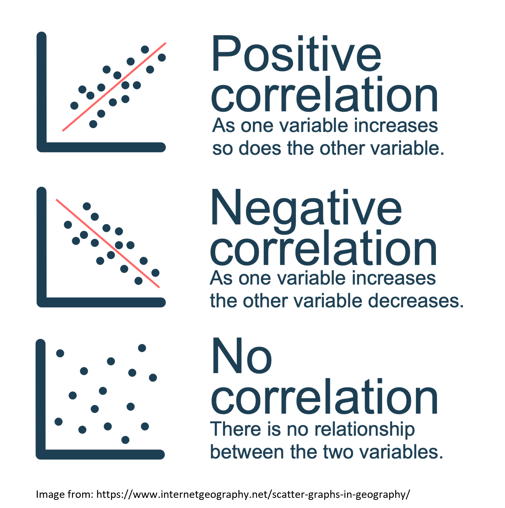

getwd()[1] "/Users/ryandonovan 1/Desktop/rintro/activities/week5"In this weeks workshop, we are going to learn how to perform correlations (simple and multiple) which you covered in last weeks lecture, along with checking the relevant assumptions etc.

- Use the jmv package to run descriptive statistics and check assumptions.
- Conduct a simple correlation in R.
- Conduct a multiple correlation R.
- Learn how to make pretty correlation graphs.
- Conduct an apriori power analysis in R for correlations.
Let’s begin by ensuring your working environment is ready for today’s session. Open RStudio or Posit Cloud and complete the following tasks to set everything up.
One of the first steps in each of these workshops is setting up your *working directory*. The working directory is the default folder where R will look to import files or save any files you export.
If you don’t set the working directory, R might not be able to locate the files you need (e.g., when importing a dataset) or you might not know where your exported files have been saved. Setting the working directory beforehand ensures that everything is in the right place and avoids these issues.
Click:
Session → Set Working Directory → Choose Directory
Navigate to the folder you created for this course (this should be the same folder you used for previous workshops).
Create a new folder called week5 inside this directory.
Select the week5 folder and click Open.
Don’t forget to verify your working directory before we get started
You can always check your current working directory by typing in the following command in the console:
getwd()[1] "/Users/ryandonovan 1/Desktop/rintro/activities/week5"As in previous weeks we will create an R script that we can use for today’s activities. This week we can call our script 05-correlations
Go to the menu bar and select:
File → New File → R Script
This will open an untitled R script.
To save and name your script, select:
File→ Save As, then enter the name:
05-correlations
Click Save
At the top of your R script type in and run the following code (this turns off scientific notation from your output:
options(scipen = 999)We’ll be using several R packages to make our analysis easier. The jmv package is particularly helpful for running descriptive statistics, while pwr helps us calculate power for our tests. The car package will allow us to check additional assumptions. We will be using a new package this week also: correlation, this package will be used for running our correlations.
REMEMBER: If you encounter an error message like “Error in library(package name): there is no packaged calledpackage name”, you’ll need to install the package first by editing the following for your console:
install.packages("package name") #replace "package name" with the actual package nameHere are the packages we will be using today:
library(jmv) # this will help us run descriptive statistics Warning: package 'jmv' was built under R version 4.3.3library(pwr) # this will enable us to conduct power analysis
library(car) # this is for checking assumptionsLoading required package: carDatalibrary(correlation) #this runs our correlationWarning: package 'correlation' was built under R version 4.3.3library(performance) # this helps with our assumption checksWarning: package 'performance' was built under R version 4.3.3library(psych) # this will be helpful for our multiple correlation graph
Attaching package: 'psych'The following object is masked from 'package:car':
logitThe following objects are masked from 'package:jmv':
pca, reliabilitylibrary(ggplot2) # we will be useful for making lots of pretty graphs
Attaching package: 'ggplot2'The following objects are masked from 'package:psych':
%+%, alphalibrary(ggcorrplot) # we will be useful for making lots of pretty graphsToday we are going to analyse data from a study on sleep quality, personality factors, and psychological wellbeing which you will find it on Canvas under the Module Week 5
- SleepQuality.csv → our dataset
week5 folder.Once this is done load the dataset into R and save it as a dataframe called “df_sleep”:
df_sleep <- read.csv("SleepQuality.csv")Todays data was collected from a cross-sectional study examining the relationship between sleep difficulty, anxiety, and depression.
After loading the datasets, it’s always good practice to inspect it before doing any analyses. You can use the head() function to get an overview of the sleep quality dataset.
head(df_sleep) Participant SleepDifficulty Optimism Depression Anxiety
1 1 12.32332 6.895218 25.73838 50.14666
2 2 12.03404 12.593687 26.36019 50.59385
3 3 12.05411 5.389429 27.75646 50.47726
4 4 13.47842 9.192558 25.01543 53.32908
5 5 16.32334 5.869162 32.23879 70.42495
6 6 18.55490 5.819719 36.75899 73.08169Now that our environment is set up and our dataset is loaded, we are ready to dive into descriptive statistics & check our assumptions.
Last week we learned how to use descriptives function to do both of these things.
Let’s imagine we’re interested in investigating the relationship between depression and anxiety. Specifically we predict that higher levels of depression (as shown by higher scores) will be associated with higher anxiety levels (as shown by higher scores).
In this case:
Our variables are 1) depression and 2) anxiety
We could specify our hypothesis as such:
H1: We predict that higher depression will be positively correlated with higher anxiety scores.
H0 (Null hypothesis): There will not be a significant correlation between depression scores and anxiety scores
Note that as we do specify the direction of the association / correlation that this is a directional hypothesis
As we are interested in the relationship between two continuous variables, this would be best addressed via a simple correlation. Before we can do this, there are a couple of preliminary steps we need to take. First, we need to check the assumptions required for a correlation.
There are two main types of correlation you might use: Pearsons and Spearmans , for an overview of both check the associated textbook chapter on correlations. For the purposes of this workshop, you would typically use Pearsons correlation, unless the below assumptions are not met.
There are several key assumptions for conducting Pearsons simple correlation:
a. The data are continuous, and are either interval or ratio.
Interval data = Data that is measured on a numeric scale with equal distance between adjacent values, that does not have a true zero. This is a very common data type in research (e.g. Test scores, IQ etc).
Ratio data = Data that is measured on a numeric scale with equal distance between adjacent values, that has a true zero (e.g. Height, Weight etc).
Here we know our two variables are outcomes on a wellbeing test, as such they are interval data and this assumption has been met
b. There is a data point for each participant for both variables.
A quick way to check this assumption is to see if there is any missing data. If there isn’t then this assumption is met. Note that number of missing data points is one of the values you automatically get when using the descriptives function.
c. The data are normally distributed for your two variables.
d. The relationship between the two variables is linear.
e. The assumption of homoscedasticity.
Assumptions (c-d): Normality & linearity
For correlations we can check these assumptions via visualization. Please refer to the associated textbook chapter for detailed guidance on checking these assumptions via visualization.
Normality can be assessed using a histogram and qqplot (both of with we can get using the descriptives function), and also Shapiro-Wilks test which we learned last week. We can also take this opportunity to get some of our descriptive statistics for our write-up, we need mean and standard deviation for both variables.
Remember if you type ?descriptives into your console it will give you an overview of the arguments you can use.
descriptives(df_sleep, # our data
vars = c("Depression", "Anxiety"), # our two variables
hist = TRUE, # this generates a histogram
sw = TRUE, # this runs shapiro-wilks test
qq=TRUE) # this generates a qq plot
DESCRIPTIVES
Descriptives
─────────────────────────────────────────────────
Depression Anxiety
─────────────────────────────────────────────────
N 150 150
Missing 0 0
Mean 25.05236 50.30168
Median 25.14149 50.21348
Standard deviation 6.173965 12.34318
Minimum 8.203621 16.32001
Maximum 40.04161 78.15740
Shapiro-Wilk W 0.9942665 0.9914144
Shapiro-Wilk p 0.8206004 0.5009269
───────────────────────────────────────────────── 


To check for linearity can use a scatterplot. The below code will generate a simple scatterplot for this purpose of checking normality (later on we’ll learn to generate prettier graphs that you can use in your reports).
plot(x=df_sleep$Depression,y=df_sleep$Anxiety)e. Homoscedasticity
There are a number of ways to check this assumption: visually via plotting of the residuals (which we will cover in Week 7 for Regression), or via a test. Here we will use a Breusch-Pagan test (1979) for heteroscedasticity.
To do this we will create a linear model, and then use the function check_heteroscasticity from the performance package.
If we get a non-significant p-value then the data is homoscedastic and our assumption has been met.
model <- lm(Depression ~ Anxiety, data = df_sleep) # here we are creating an object "model" which contatins a linear model of our DV ~ IV
check_heteroscedasticity(model) # this function performs a Breusch-Pagan test for our modelOK: Error variance appears to be homoscedastic (p = 0.771).Based on the above we can ascertain that:
the variables are normally distributed
the relationship between the two variables is linear
the assumption of homoscedasticity is met
As such we can use a Pearson correlation to test our hypotheses.
We use the correlation function to perform the correlation. The syntax is:
# Remember you need to edit the specific names/variables below to make it work for our data and needs
cor.test(DataframeName$Variable1, DataframeName$Variable2, method = "pearson" OR "spearman", alternative = "two.sided" or "less" or "greater")
# alternative specifies whether it's a one or two-sided test, or one-sided. "greater" corresponds to positive association, "less" to negative associationAs we have a directional hypothesis where we expect a positive correlation we will run a one-sided correlation. Let’s run this correlation for depression and anxiety on our df_sleep dataset:
cor.test(df_sleep$Depression, df_sleep$Anxiety, method = "pearson", alternative = "greater")
Pearson's product-moment correlation
data: df_sleep$Depression and df_sleep$Anxiety
t = 56.595, df = 148, p-value < 0.00000000000000022
alternative hypothesis: true correlation is greater than 0
95 percent confidence interval:
0.9708085 1.0000000
sample estimates:
cor
0.977668 The correlation results show a significant correlation between the depression and anxiety scores.
Here’s how we might write up the results in APA style:
A Pearsons correlation was conducted to assess the relationship between depression (M= 25.05, SD= 6.17) and anxiety scores (M= 50.3, SD= 12.34). The test showed that there was a significant positive correlation between the two variables r(148) = 0.98, p < 0.01. As such we reject the null hypothesis.
Sometimes we’re interested in the associations between multiple variables. In todays dataset we have sleep difficulty, optimism, depression, and anxiety. As such we might be interested in the relationship between all four variables.
In addition to our earlier prediction regarding depression and anxiety we could also predict:
1) that greater sleep difficulty (as shown by higher values) will be associated with higher anxiety and depression levels (as shown by higher scores).
2) that greater optimism (as shown by higher values) will be associated with lower anxiety and depression levels (as shown by lower scores).
In this case:
Our variables are 1) depression, 2) anxiety, 3) sleep difficulty, and 4) optimism.
As we are interested in the relationship between four continuous variables, this would be best addressed via a multiple correlation. Before we can do this, there are a couple of preliminary steps we need to take.
A lot of the steps are very similar to a simple correlation. So we can refer to the above sections for help if we get unsure.
We already checked that depression and anxiety meet the assumptions for a Pearsons correlation but now we need to do the same for sleep difficulty and optimism. Double-check Activity 4 for a reminder on the steps to check the below.
a. The data are continuous, and are either interval or ratio.
b. There is a data point for each participant for both variables.
c. The data are normally distributed for your two variables.
d. The relationship between the two variables is linear.
e. The assumption of homoscedasticity.
descriptives(df_sleep, # our data
vars = c("Depression", "Anxiety", "SleepDifficulty", "Optimism"), # our four variables
hist = TRUE, # this generates a histogram
sw = TRUE, # this runs shapiro-wilks test
qq=TRUE) # this generates a qq plot
DESCRIPTIVES
Descriptives
─────────────────────────────────────────────────────────────────────────────────
Depression Anxiety SleepDifficulty Optimism
─────────────────────────────────────────────────────────────────────────────────
N 150 150 150 150
Missing 0 0 0 0
Mean 25.05236 50.30168 12.37026 10.57763
Median 25.14149 50.21348 12.37819 10.76353
Standard deviation 6.173965 12.34318 2.736946 3.284548
Minimum 8.203621 16.32001 6.599527 0.4951533
Maximum 40.04161 78.15740 18.73516 18.83997
Shapiro-Wilk W 0.9942665 0.9914144 0.9846297 0.9912025
Shapiro-Wilk p 0.8206004 0.5009269 0.0937667 0.4788844
───────────────────────────────────────────────────────────────────────────────── 

If you want to try the pairs.panel function it enables you to check the visual assumptions for all the variables at once.
pairs.panels(df_sleep)To run our multiple correlation we need to use slightly different syntax than before:
# Remember you need to edit the specific names/variables below to make it work for our data and needs
correlation(DataframeName, # our data
select = c("Variable1", "Variable2", "Variable3", "Variable4"), # our variables
method = "pearson" OR "spearman",
p_adjust = "bonferroni") # our bonferroni adjustment for multiple comparisons - see the associated textbook chapter for a discussion of this
# Note that we do not specify the direction of our predicted correlation here as some may be positive and others may be negative# we are saving the results of our correlation as an object called "mcor"
mcor <- correlation(df_sleep, # our data
select = c("Depression", "Anxiety", "SleepDifficulty", "Optimism"), # our variables
method = "pearson",
p_adjust = "bonferroni") # our bonferroni adjustment for multiple comparisons
mcor# Correlation Matrix (pearson-method)
Parameter1 | Parameter2 | r | 95% CI | t(148) | p
-------------------------------------------------------------------------------
Depression | Anxiety | 0.98 | [ 0.97, 0.98] | 56.60 | < .001***
Depression | SleepDifficulty | 0.90 | [ 0.87, 0.93] | 25.65 | < .001***
Depression | Optimism | -0.16 | [-0.31, 0.00] | -1.98 | 0.298
Anxiety | SleepDifficulty | 0.88 | [ 0.84, 0.91] | 22.47 | < .001***
Anxiety | Optimism | -0.14 | [-0.29, 0.02] | -1.73 | 0.515
SleepDifficulty | Optimism | -0.10 | [-0.25, 0.06] | -1.18 | > .999
p-value adjustment method: Bonferroni
Observations: 150How we might write up the results in APA style?
A Pearsons multiple correlation with bonferroni correction was conducted to assess the relationship between depression (M= 24.26, SD= 5.89), anxiety scores (M= 48.62, SD= 12.48), sleep difficulty (M= ?, SD= ?), and optimism (M= ?, SD= ?). The test showed that there was a significant positive correlation between depression and anxiety r(148) = 0.97, p < 0.01, and depression and sleep difficulty r(148) = 0.9, p < 0.01, but no significant correlation between depression and optimism r(148) = -0.16, p = 0.29. There was also a significant positive correlation between anxiety and sleep difficulty r(148) = 0.88, p < 0.01, but no significant correlation between optimism and anxiety r(148) = -0.14, p = 0.52 or optimism and sleep difficulty r(148) = -0.1, p = >.99.
We need to visualize our data not only to check our assumptions but also to include in our write-up / results / dissertations. As you may see above the write-up for a multiple correlation can be lengthy/confusing, and a good graphic can help your reader (and you) understand the results more easily.
Today we’ll be using the ggcorrplot function. We will learn a lot more about making visualizations in week 9, but for today we will learn how to clearly visualize our correlation results. The code below makes a correlation matrix for the multiple correlation we just ran.
ggcorrplot(mcor)
If you type in ?ggcorrplot to your console you can see there are many optional arguments you can use to customize your graph. Using this try to do the following:
ggcorrplot(mcor, type = "lower", method = "circle", title = "Super cool correlation matrix",
lab = TRUE)You may also want to save your graphs outside of R (e.g. to use in a report or paper). There are a few ways to do this.

png("myplot.png") #specify you want a png file, and your file name
myplot <- ggcorrplot(mcor) # create an object with that same name that is your plot
print(myplot) # print the plot
dev.off() # #this tells R that we are done with adding stuff to our pngquartz_off_screen
2 Here we are going to learn about how to conduct a power analysis for a correlation.
As you may recall there are some key pieces of information we need for a power analysis, and some specifics that we need for a correlation:
Alpha level (typically 0.05 in Psychology and the social sciences)
The minimum correlation size of interest
Our desired power
If our test is one or two-tailed (i.e. do we have a directional or nondirectional hypothesis)
Reminder that this interactive visualization can be helpful in understanding how these things interact.
This is a good question! Correlation (r) values can be split into arbitrary bands as shown below (Cohen, 1988):
Small Effect (r = ~ 0.1)
Medium Effect (r = ~ 0.3)
Large Effect (r = ~ 0.5)
As we are aware it is easier to detect large effects. As such, if we really have no idea what effect size we should expect then we should power for small effects.
If however we are conducting a replication, or a very similar study to one that has been already done, then we can power for the correlation they report.
Again I refer to: A useful paper if you’re interested in learning more
The syntax for conducting an apriori statistical power analysis for a simple correlation is the following:
# Conduct power analysis for a simple correlation
pwr.r.test(r = 0.2, # your expected correlation value
sig.level = 0.05, # Significance level
power = 0.80, # Desired power level
alternative = "two.sided") # Indicates a two-tailed test, #can be changed to less or greater
approximate correlation power calculation (arctangh transformation)
n = 193.0867
r = 0.2
sig.level = 0.05
power = 0.8
alternative = two.sidedTry running the above power-analyses again but for a one sided (directional) test. What does this do to our required sample size?
What happens if we increase the correlation value we expect to find?